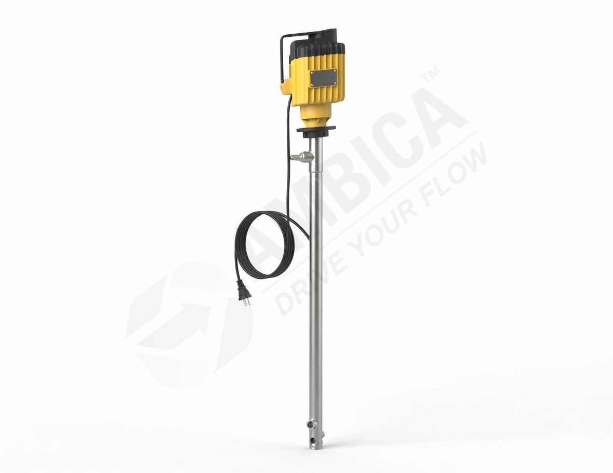

Electric Barrel Pump
Enquire Now →
AMTMBP-100S
SS316 electric motor-operated barrel pump for compatible industrial liquid transfer applications.
Flow:
80–90 LPM
Head:
15 MTR
MOC:
SS316
Drive:
Electric